Markmið verkefnis 2 var að kynna mér tölvustuddar skurðaðferðir og nota þær í hagnýtri smíði.
Verkefnið skiptist í þrjá hluta, hópverkefni þar sem við ákvörðuðum kerf fyrir geislaskerann,
og einstaklingsverkefni þar sem ég hannaði og skar út límmiða með vínýlskera og
bjó til parametrískt módel sem var skorið út með geislaskera og sett saman.
FYRSTI HLUTI - VÍNYLSKURÐUR
Ég byrjaði á því að leita að hugmyndum á netinu og valdi nokkrar myndir sem mér fannst henta vel sem límmiðar.
Til að tryggja að ferlið væri rétt framkvæmdi ég næst það sem kennt var í
kennslumyndbandi
sem ég studdist við.
Ég notaði
Inkscape
til að vinna myndirnar.
Þar stillti ég þær þannig að þær hentuðu fyrir vínýlskurð,
meðal annars með því að fara í "Fill and Stroke" stillingarnar og velja No fill fyrir engin fylling,
Flat color fyrir línur og stilla stroke width um 0.020 mm í "Stroke style" svo útlínurnar
yrðu skýrar og rétt fyrir skurð.
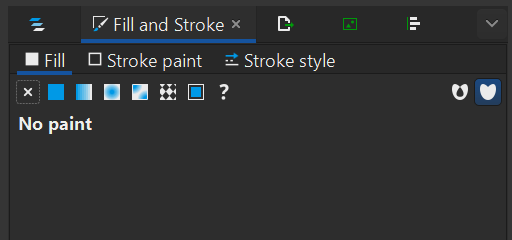
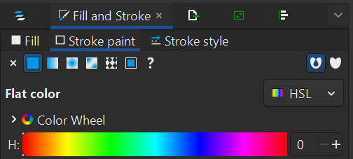
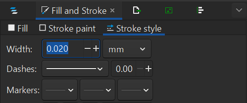
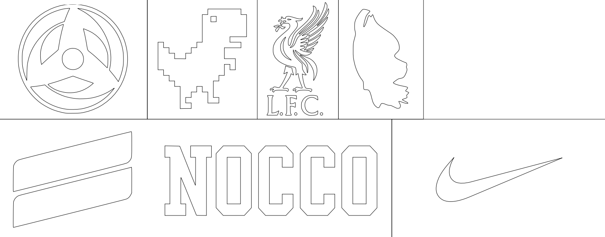
Eftir að hafa fykta í Inkscape eins og má sjá mynd að ofan, vistaði ég skrána sem .pdf og opnaði hana í
Adobe Acrobat.
Þaðan sendi ég skrána í vínýlskerann með prentskipun,
þar sem ég þurfti að passa að hæð og breidd væru rétt stillt áður en skurðurinn hófst.
Að lokum framkvæmdi vínýlskerinn skurðinn og niðurstaðan voru snyrtilega límmiðar.
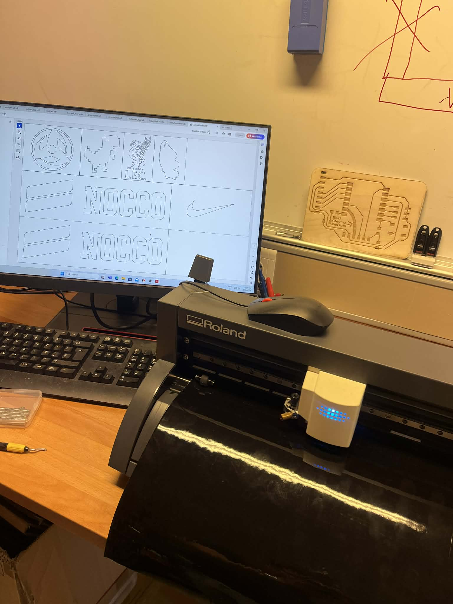
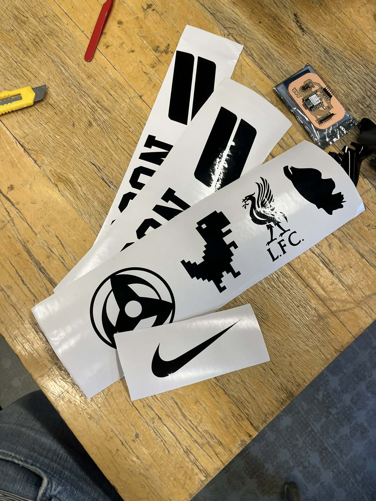
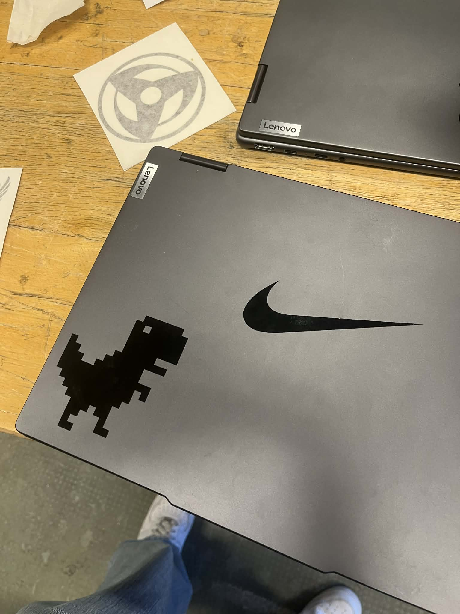
Þar með var fyrsti hluti verkefnisins lokið. Hægt er að sækja .svg og .pdf skrár
hér.
ANNAR HLUTI - HUGMYND OG HÖNNUN FYRIR GEISLASKERA
Í öðrum hluta verkefnisins var markmiðið að hanna hlut sem hentar vel fyrir geislaskera og er jafnframt hagnýtur í notkun.
Ég ákvað að búa til tölvustand, þar sem slíkur standur nýtist vel til að lyfta tölvunni upp, bæta vinnustöðu og auka loftflæði.
Ég leitaði að innblæstri á netinu og studdist við hönnun sem mér fannst einföld og vel útfærð.
Hér er hlekkur á innblásturinn sem ég notaði
hér.
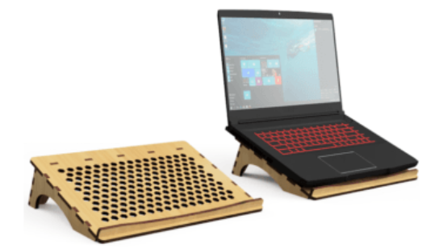
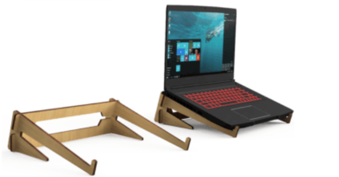
Til að hönnunin væri auðveld að aðlaga að mismunandi aðstæðum setti ég módelið upp sem parametríska hönnun í
Fusion 360
,
sem ég notaði sem teikniforrit í verkefninu.
Þar skilgreindi ég lykilmál (t.d. efnisþykkt og helstu stærðir) sem breytur,
þannig að hægt væri að fínstilla standinn fljótt ef efnisval eða mælingar breyttust.
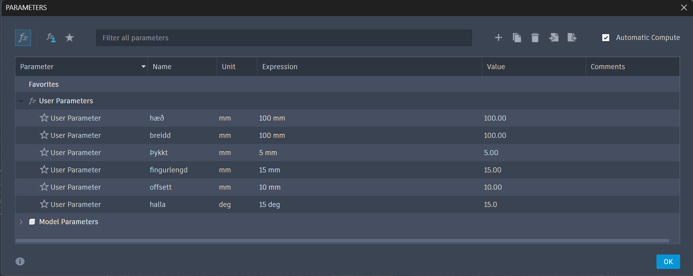
Næst tók ég mælingar af tölvunni minni til að tryggja að standurinn passaði rétt.
Ég notaði þær mælingar til að ákveða breidd, hæð og stuðningspunkta,
og hafði jafnframt í huga að skurðflötur þyrfti að rúmast innan þeirra marka sem voru í boði.
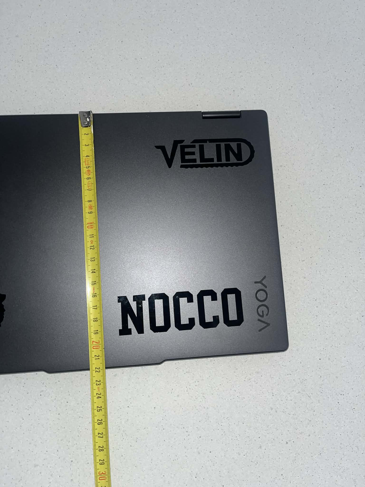
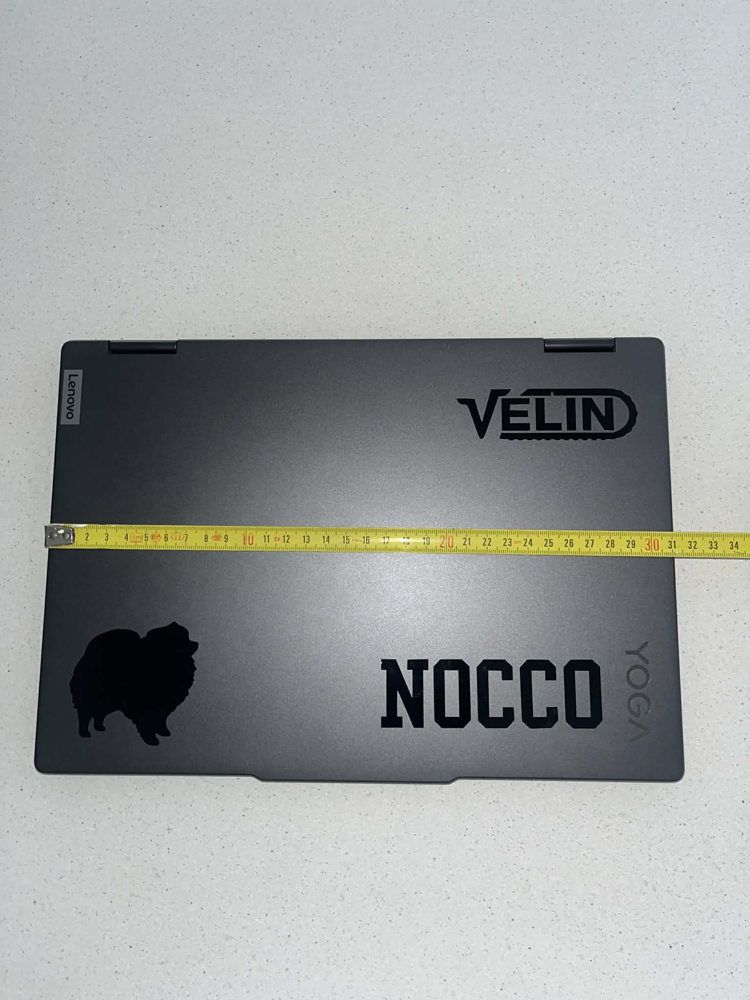
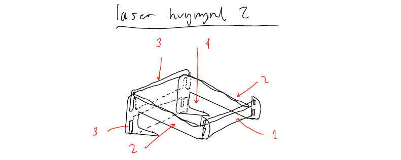
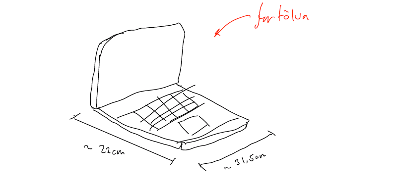
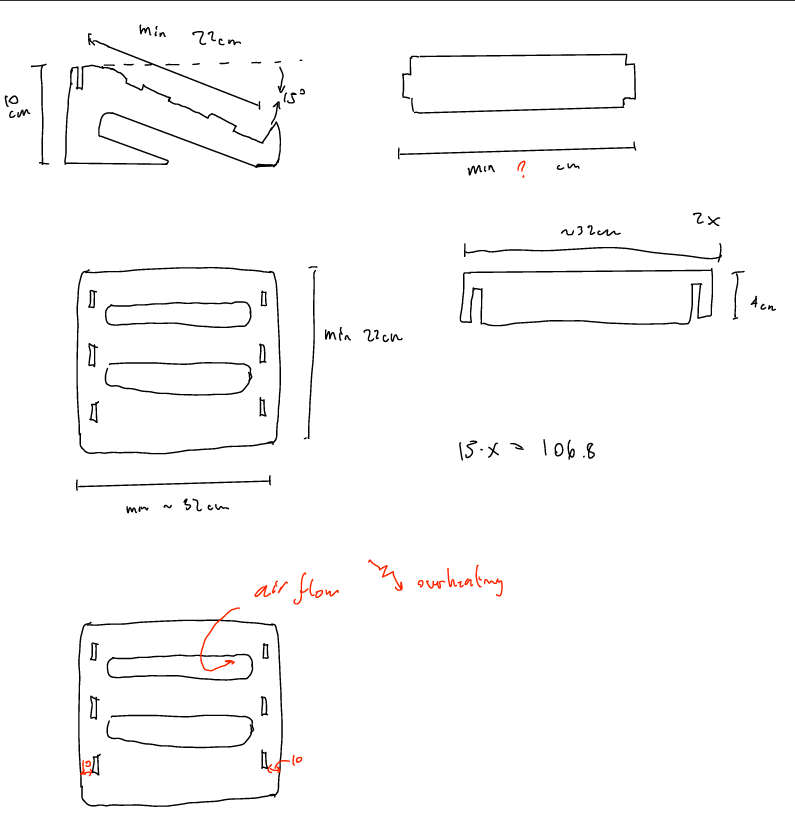
Þegar grunnformið var komið ákvað ég hvaða festingar (joints) hentuðu best fyrir press-fit samsetningu.
Ég valdi að nota tab-joints og edge-lap joint, þar sem þær festingar eru einfaldar,
sterkar og henta vel fyrir skurð með geislaskera án líms.
Til að fá betri yfirsýn yfir mismunandi tegundir festinga og hvernig þær eru almennt notaðar í slíku verkefni studdist
ég við YouTube-myndband sem sýnir helstu útfærslur og dæmi
hér.
Hér að neðan má sjá myndir af festingunum sem ég teiknaði í Fusion 360.
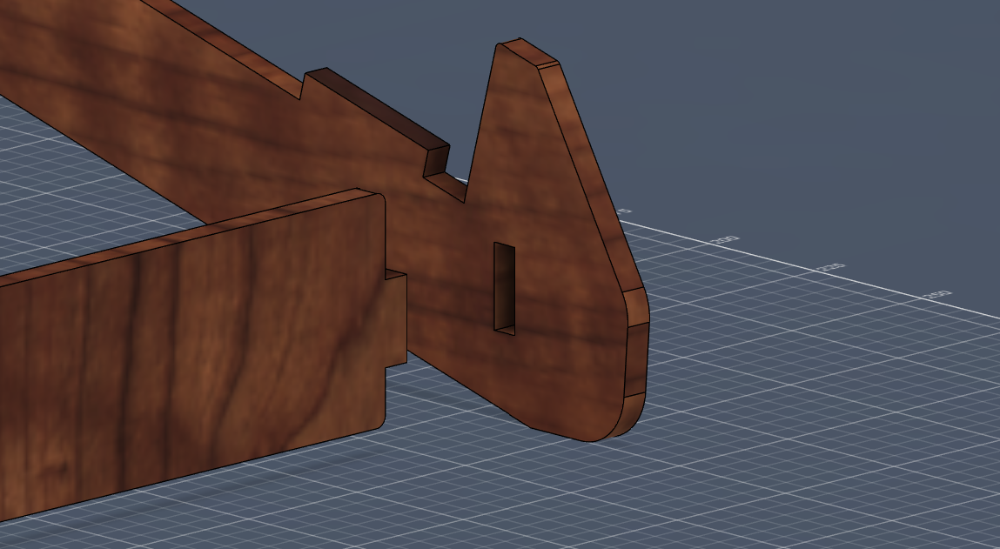
Tab-joint
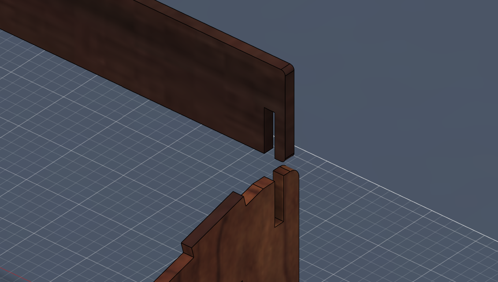
Edge-lap joint
Að lokum fínstillti ég útlit,
stærðir og samsetningu í Fusion 360 og kláraði lokaútfærsluna áður en næstu skref hófust.
Hér má sjá 3D sýn af lokateikningunni.
ANNAR HLUTI - KERF OG PRÓFUN
Í þessum hluta verkefnisins vann ég í hópverkefni þar sem markmiðið var að ákvarða kerf fyrir geislaskerann með prófunum.
Við útbjuggum kerf-próf, skárum út prófunarstykki og mældum síðan niðurstöðuna til að fá raunhæft gildi fyrir kerf sem hægt væri að nota í hönnuninni.
Með því að hafa kerf rétt reiknað verður press-fit samsetning nákvæmari og einingarnar passa betur saman.
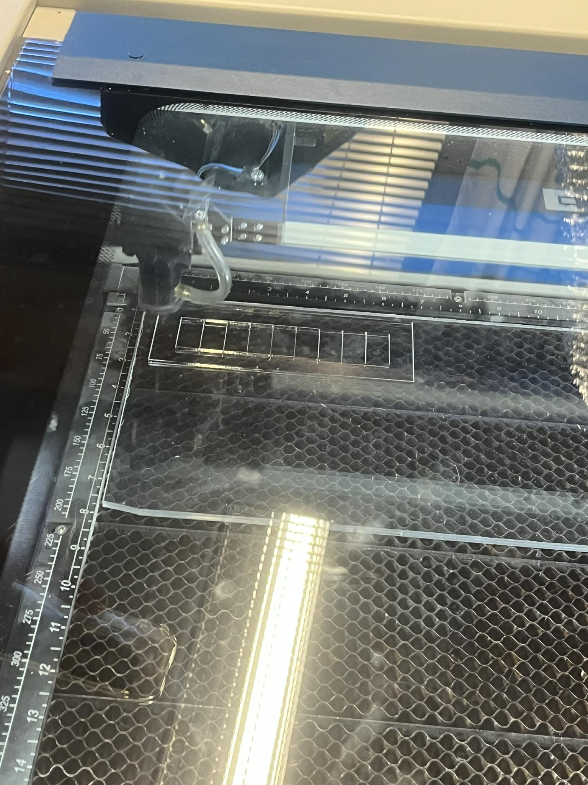
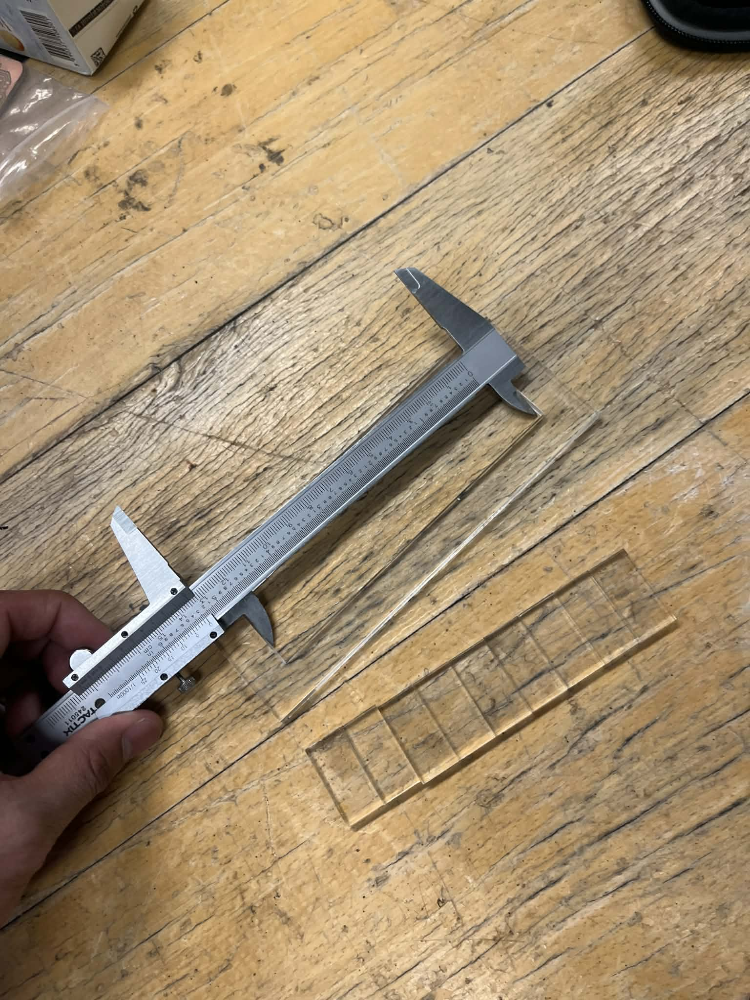
Við reiknuðum kerf með því að skera út kerf-próf og mæla síðan muninn á kubbunum og gatinu.
Í mínu tilfelli mældust kubbarnir L' = 13.20 mm en gatið milli L = 13.36 mm.
Þar sem geislaskerinn skar samtals 10 línur (n = 10) og þá fæst kerf geislaskerans:
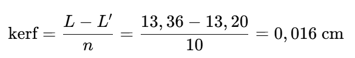
Eftir að kerf gildið var komið notaði ég kennsluefni til að setja kerf inn á réttan hátt í hönnunarferlið.
Ég studdist við Youtube-myndband frá
FabLab Akureyri
þar sem sýnt er hvernig kerf er stillt í Fusion 360,
og einnig annað myndband sem útskýrir hvernig hægt er að leggja alla hluta teikningarinnar á sama plan áður en .dxf skrá er útbúið fyrir skurð.
Til að staðfesta að kerf-stillingin virkaði, ákvað ég að prófa fyrst festingar áður en ég skar út alla hönnunina.
Ég teiknaði prófunaríhluti með þeim festingum sem ég ætlaði að nota, sérstaklega tab joint og edge-lap joint,
og notaði kerf-stillinguna í Fusion 360 til að fá rétta press-fit stærð.
Þessi prófun gaf mér betri mynd af því hvort passunin væri of þröng eða of laus og gerði mér kleift að fínstilla áður en ég fór í lokaskurð.
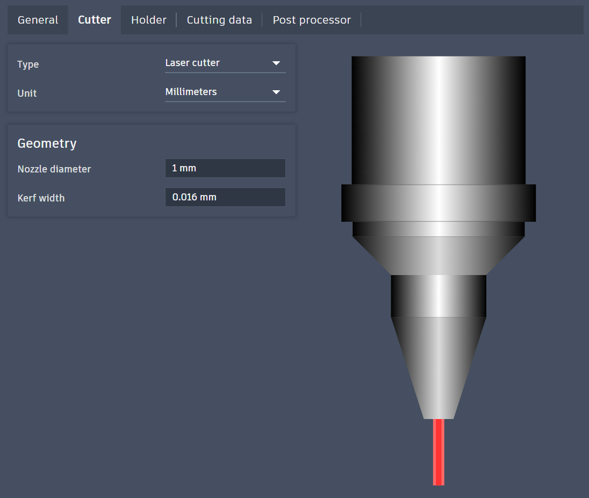
Eins og má sjá hér að neðan pössuðu prófunaríhlutirnir vel saman í samsetningu,
sem bendir til þess að 0,016 mm sé heppilegt kerf-gildi fyrir 5 mm þykkt akríl og er tilbuinn fyrir næsta hluta verkefnisins.
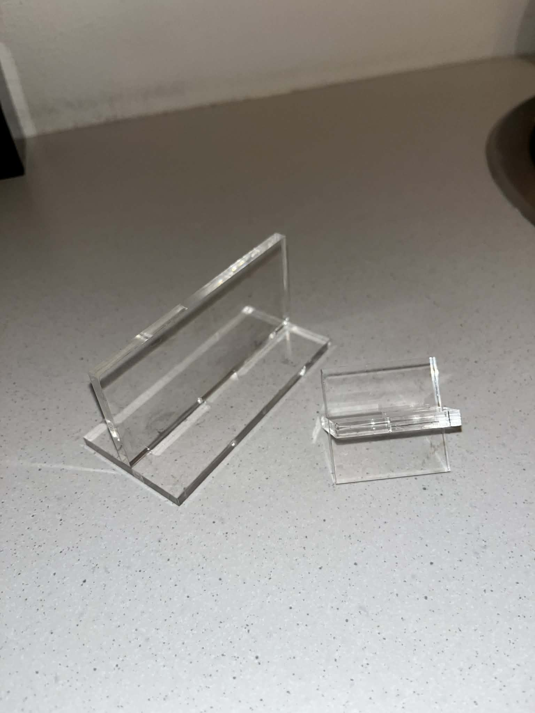
ÞRIÐJI HLUTI - GEISLASKURÐUR
Þegar kom að geislaskurði notaði ég 5 mm akríl eins og með kerf prófun. Ég gerði mér ekki grein fyrir því að 5 mm akríl efnið var að klárast, en
ég nýtti mér afgangsplötur sem höfðu orðið eftir frá fyrri nemendum og voru enn nothæfar fyrir verkefnið.
Eins og má sjá á myndinni hér að neðan voru íhlutirnir skornir út úr endurnýttu (afgangs) efni og framkvæmdin gekk vel.
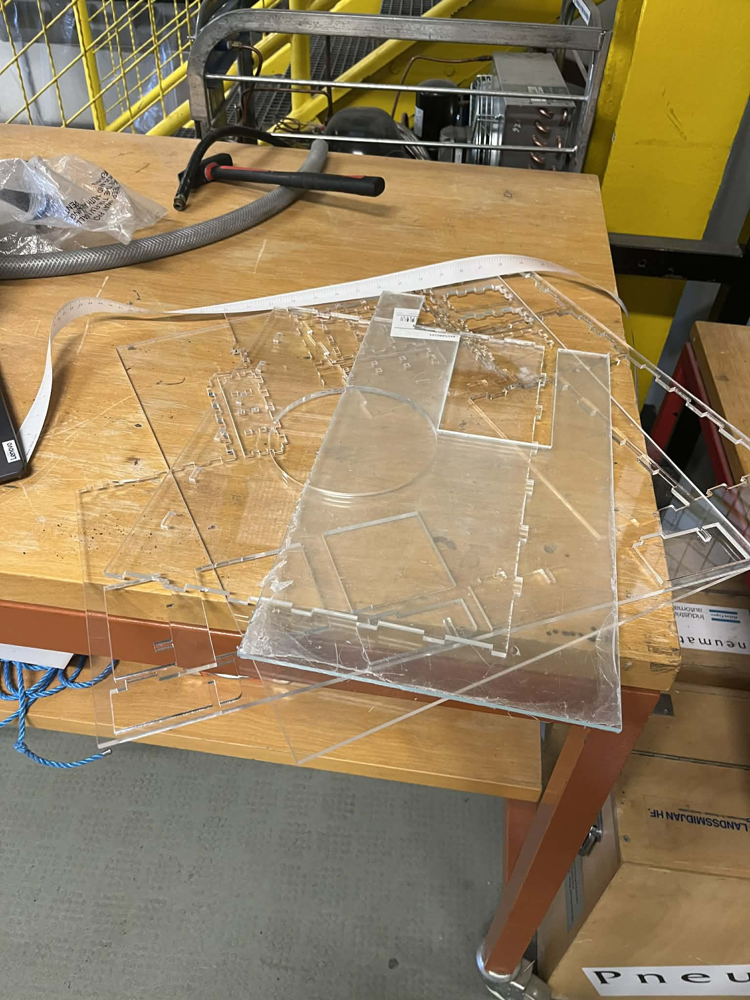
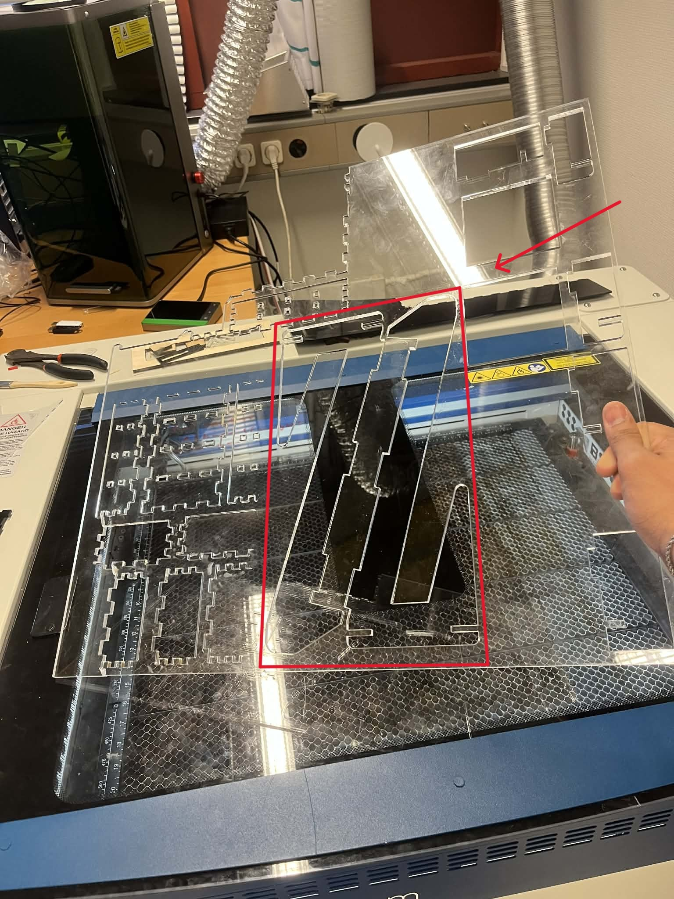
Í upphafi virtist skurðurinn ganga vel, en fljótlega komu upp hindranir.
Við notuðum Epilog geislaskera og vélin skar ekki í gegn í 5 mm akrílið.
Eftir athugun kom í ljós að Auto Focus í geislastilling var ekki rétt stillt
þ.e.a.s. hann var ekki stilltur á Thickness og því passaði fókusinn ekki við raunverulega þykkt efnisins.
Þegar þessi stilling var leiðrétt gekk skurðurinn mun betur og vélin náði að skera í gegn.
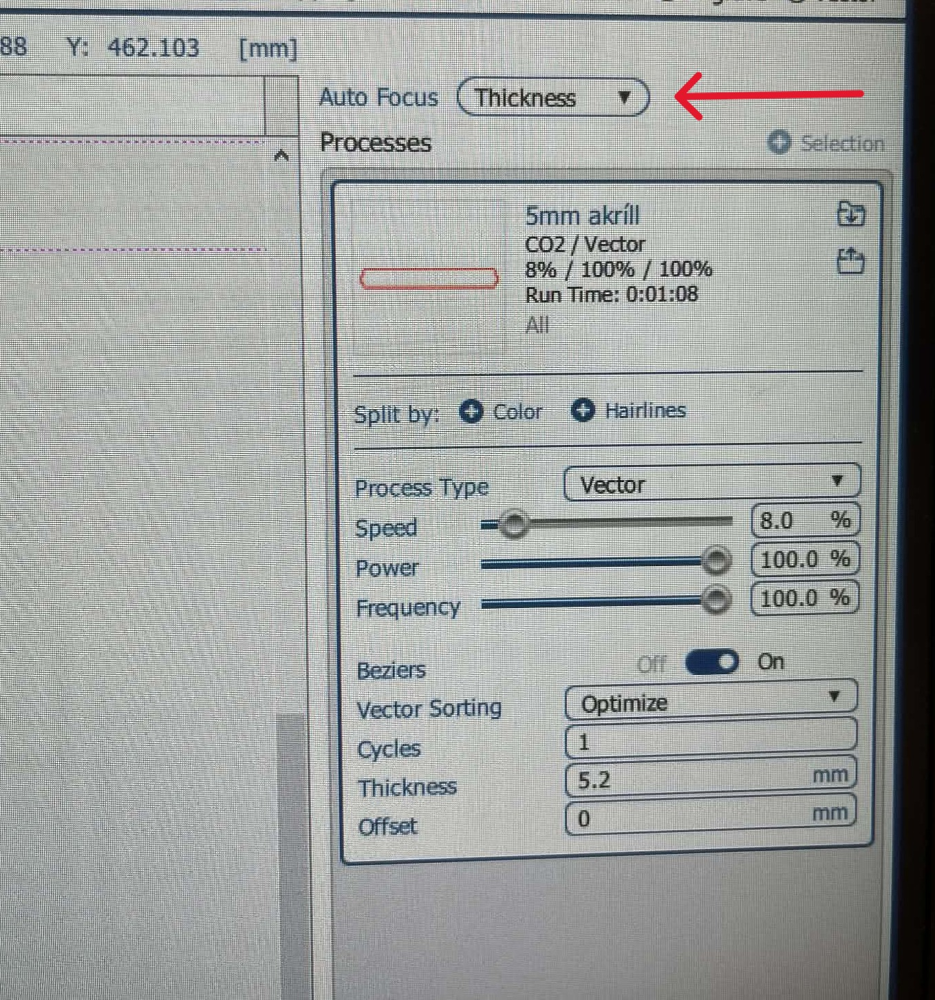
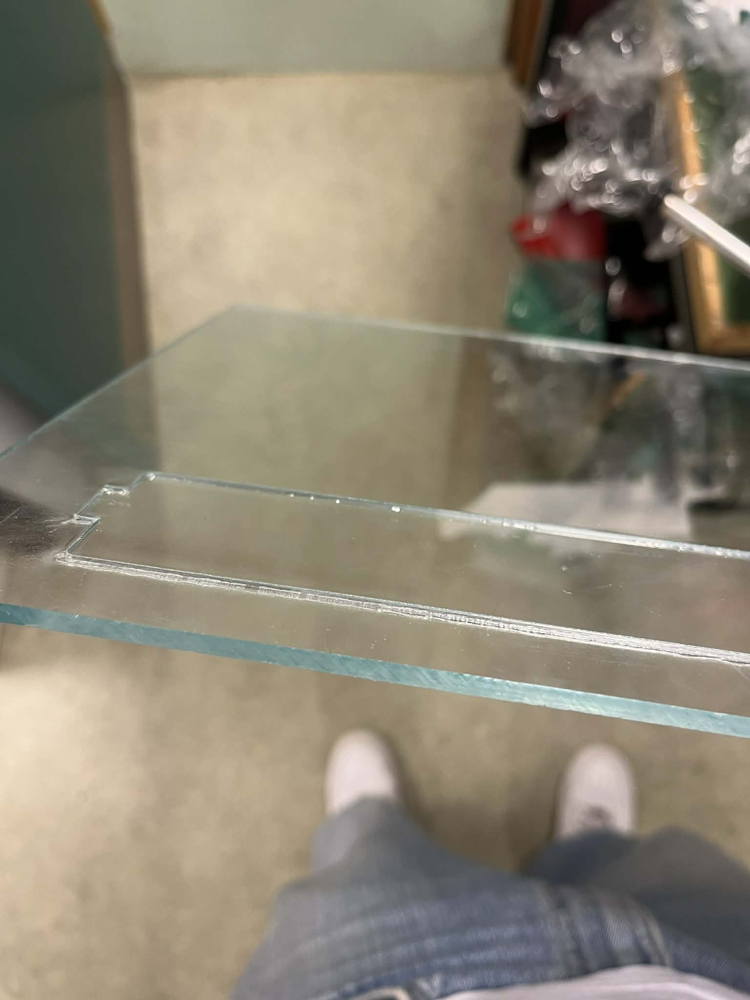
Í ferlinu brotnaði einnig ein plata.
Sem betur fer var til annað efni sem var nægilega stórt til að leysa af hólmi plötuna sem brotnaði,
og ég gat því haldið áfram án þess að breyta hönnuninni verulega. Hins vegar náðist ekki að halda útlitinu alveg eins og í upprunalegu teikningunni,
þar sem efnið var að klárast og ég hafði takmarkaða valkosti.
Ég þurfti því að nota afgangsplötu sem hafði hringlaga útskurð eftir frá fyrri nemanda,
og sá útskurður endaði inni í plötunni þar sem fartölvan á að liggja.
Eftir það var allt akríllið sem ég hafði aðgang að nýtt.
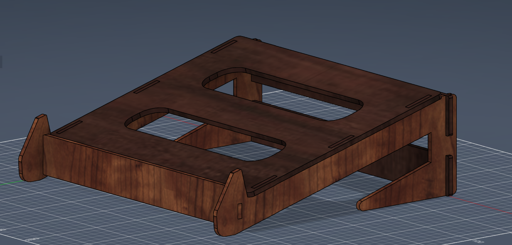
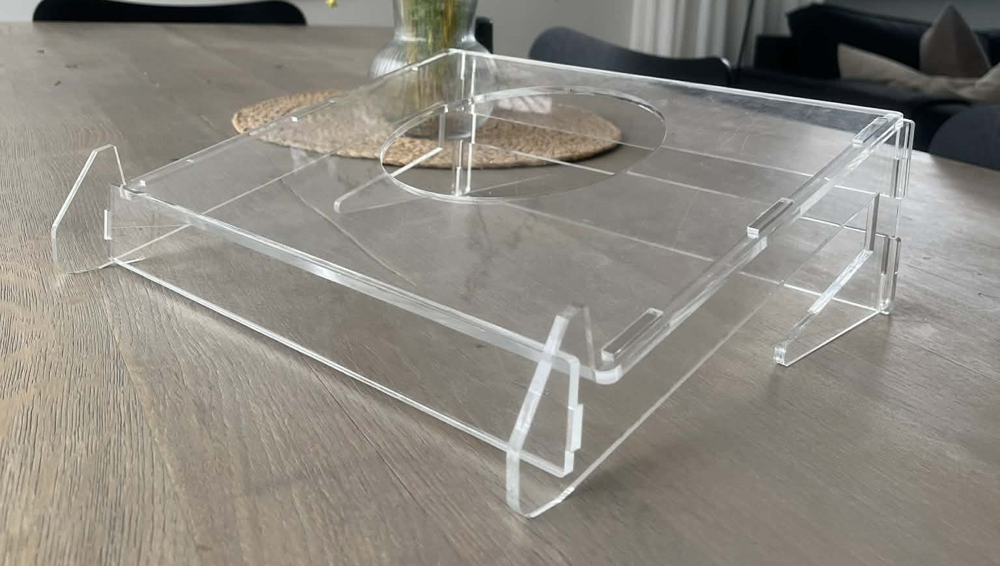
Að lokum tókst að skera út einingarnar og setja þær saman með góðum árangri.
Samsetningin var almennt stöðug og útlitið snyrtilegt.
Hins vegar voru edge-lap festingarnar örlítið lausar,
sem bendir til þess að það hefði verið gagnlegt að framkvæma fleiri kerf-prófanir eða fínstilla passningu sérstaklega fyrir þetta efni og þessar festingar.
Heildarferlið gekk þó vel og verkefnið gaf mér góða innsýn í mikilvægi réttra vélastillinga og prófana áður en lokaútgáfa er skorin út.
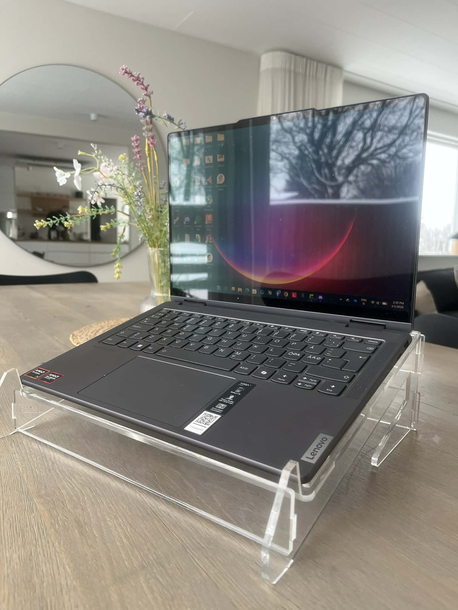
Hér er hægt að nálgast .f3d og .dxf skrárnar á
Thingiverse
prófílnum mínum.